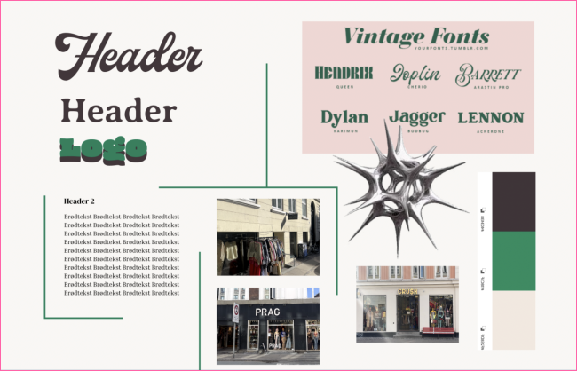

I dette tema blev vi introduceret til begreberne User Experience Design (UX) og User Interface (UI). Vi lærte hvilke teorier, værktøjer og metoder der kan benyttes til research og design af digitale brugergrænseflader. Den forståelse jeg fik for samspillet mellem research metoder og design, er vigtig da man på denne måde kan begrunde sine designvalg ud fra konkrete undersøgelser baseret på reelle brugere.
Ydermere fik vi et større indblik i Figma hvor vi bl.a lærte at lave en klikbar prototype som kan bruges til 5 sekunders- og tænke højt test. Dette forløb lærte mig vigtigheden af en grundig designproces samt researchteknikker som jeg har brugt i animations- og indholdstemaet.